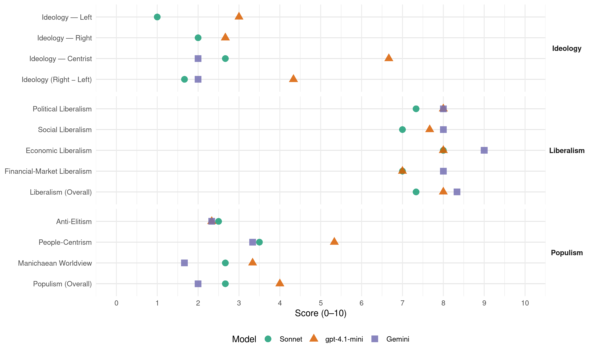

DISY (Cyprus, 2016)
manifesto_id 55711_201605
Get full text: This site shows derived annotations and short verbatim quotes only. The full manifesto text is © Manifesto Project / WZB — obtain it via manifesto-project.wzb.eu using the manifesto_id above.
Headline scores
| Dimension | Sonnet | gpt-4.1-mini | Gemini |
|---|---|---|---|
| Populism (Overall) | 2.7 | 4.0 | 2.0 |
| Anti-Elitism | 2.5 | 2.3 | 2.3 |
| People-Centrism | 3.5 | 5.3 | 3.3 |
| Manichaean Worldview | 2.7 | 3.3 | 1.7 |
| Ideology (Right − Left) | 1.7 | 4.3 | 2.0 |
| Liberalism (Overall) | 7.3 | 8.0 | 8.3 |
| Political Liberalism | 7.3 | 8.0 | 8.0 |
| Social Liberalism | 7.0 | 7.7 | 8.0 |
| Economic Liberalism | 8.0 | 8.0 | 9.0 |
| Financial-Market Liberalism | 7.0 | 7.0 | 8.0 |
Evidence per dimension
Economic Liberalism
Gemini · score 9.0 · verified · chunk 1
“πιστεύει στις δυνατότητες του ιδιωτικού τομέα”
Ο Δημοκρατικός Συναγερμός πιστεύει στις δυνατότητες του ιδιωτικού τομέα. Γνωρίζουμε ότι η βιώσιμη ανάπτυξη δεν θα προέλθει μέσω αύξησης των κρατικών δαπανών
Gemini · score 9.0 · verified · chunk 2
“δυνατότητες του ιδιωτικού τομέα”
Αγαπητοί φίλοι και φίλες,o Δημοκρατικός Συναγερμός πιστεύει στις δυνατότητες του ιδιωτικού τομέα.
Gemini · score 9.0 · verified · chunk 3
“εννοούμε την ιδιωτική πρωτοβουλία”
όταν μιλάμε για «επιχειρείν» εννοούμε την ιδιωτική πρωτοβουλία και παραγωγική δραστηριοποίηση.
gpt-4.1-mini · score 8.0 · verified · chunk 1
“Ο Δημοκρατικός Συναγερμός πιστεύει στις δυνατότητες του ιδιωτικού τομέα.”
Ο Δημοκρατικός Συναγερμός πιστεύει στις δυνατότητες του ιδιωτικού τομέα. //Γνωρίζουμε ότι η βιώσιμη ανάπτυξη δεν θα προέλθει μέσω αύξησης των κρατικών δαπανών, αλλά με ιδιωτικές επενδύσεις. // Θέλουμε τις επιχειρήσεις μας ξανά να δραστηριοποιούνται και να κερδίζουν.
gpt-4.1-mini · score 8.0 · verified · chunk 2
“Η Κύπρος διαθέτει εξειδίκευση, ταλαντούχο ανθρώπινο δυναμικό και επιχειρήσεις με όραμα”
Η Κύπρος διαθέτει εξειδίκευση, ταλαντούχο ανθρώπινο δυναμικό και επιχειρήσεις με όραμα. //Απαραίτητα συστατικά για να μπορέσει να εκμεταλλευτεί τις παγκόσμιες τάσεις και εξελίξεις. //Γνωρίζουμε ότι η βιώσιμη ανάπτυξη δεν θα προέλθει μέσω αύξησης των κρατικών δαπανών, αλλά θα προέλθει με ιδιωτικές επενδύσεις.
gpt-4.1-mini · score 8.0 · verified · chunk 3
“Η Κύπρος παρουσιάζει τον υψηλότερο ρυθμό ανάπτυξης των τελευταίων 7 ετών.”
Είναι η συλλογική προσπάθεια που έφερε την Κύπρο να καταγράφει οικονομική ανάπτυξη ελαφρά μικρότερη του 2% το 2015 με θετικές προοπτικές για το 2016. //Σε δύο μόλις χρόνια η Κύπρος παρουσιάζει τον υψηλότερο ρυθμό ανάπτυξης των τελευταίων 7 ετών. //Είναι ευρύτερα παραδεκτό ότι η προσπάθεια οικονομικής και δημοσιονομικής ανάκαμψης που κατέβαλε η Κύπρος έφερε αποτελέσματα πολύ καλύτερα του αναμενόμενου.
Sonnet · score 8.0 · verified · chunk 1
“πιστεύει στις δυνατότητες του ιδιωτικού τομέα”
Ο Δημοκρατικός Συναγερμός πιστεύει στις δυνατότητες του ιδιωτικού τομέα. Γνωρίζουμε ότι η βιώσιμη ανάπτυξη δεν θα προέλθει μέσω αύξησης των κρατικών δαπανών, αλλά με ιδιωτικές επενδύσεις.
Sonnet · score 8.0 · verified · chunk 2
“βιώσιμη ανάπτυξη δεν θα προέλθει μέσω αύξησης των κρατικών δαπανών”
Γνωρίζουμε ότι η βιώσιμη ανάπτυξη δεν θα προέλθει μέσω αύξησης των κρατικών δαπανών, αλλά θα προέλθει με ιδιωτικές επενδύσεις.
Sonnet · score 8.0 · verified · chunk 3
“ιδιωτική πρωτοβουλία και παραγωγική δραστηριοποίηση”
Πρώτον, όταν μιλάμε για «επιχειρείν» εννοούμε την ιδιωτική πρωτοβουλία και παραγωγική δραστηριοποίηση.
Financial-Market Liberalism
Gemini · score 8.0 · verified · chunk 1
“μέλλον των επαγγελματικών υπηρεσιών και του χρηματοοικονομικού τομέα”
συνδιοργανώνει ο Δημοκρατικός Συναγερμός με την Οργάνωση Νέων Επιστημόνων με θέμα «Το μέλλον των επαγγελματικών υπηρεσιών και του χρηματοοικονομικού τομέα στην Κύπρο».
Gemini · score 8.0 · verified · chunk 2
“τραπεζικό τομέα και τον τομέα των υπηρεσιών”
είτε αυτό αφορά τις κρατικές δαπάνες και τις κοινωνικές παροχές, είτε τον τραπεζικό τομέα και τον τομέα των υπηρεσιών, θα πρέπει να γίνει με τρόπο τέτοιο
gpt-4.1-mini · score 7.0 · verified · chunk 1
“Η ανθεκτικότητα και ο επαγγελματισμός που επέδειξε ο κλάδος των υπηρεσιών και του χρηματοοικονομικού τομέα, ιδιαίτερα μετά το πλήγμα που δέχθηκε η χώρα, με επίκεντρο τον ευρύτερο χρηματοπιστωτικό τομέα, αποδεικνύει την απαράμιλλη σημασία τους για την οικονομία μας.”
Η ανθεκτικότητα και ο επαγγελματισμός που επέδειξε ο κλάδος των υπηρεσιών και του χρηματοοικονομικού τομέα, ιδιαίτερα μετά το πλήγμα που δέχθηκε η χώρα, με επίκεντρο τον ευρύτερο χρηματοπιστωτικό τομέα, αποδεικνύει την απαράμιλλη σημασία τους για την οικονομία μας. //Και υπογραμμίζει περαιτέρω την σημασία του τομέα για το μέλλον,
gpt-4.1-mini · score 7.0 · verified · chunk 2
“Εργαζόμαστε για να έχουμε ποιοτική παιδεία για τα παιδιά μας”
Προχωρούμε στην εφαρμογή της ηλεκτρονικής διακυβέρνησης. //Εργαζόμαστε για να έχουμε ποιοτική παιδεία για τα παιδιά μας. //Ξεκινάμε την μεταρρύθμιση στην υγεία, έχοντας στο επίκεντρο τον ασθενή και όχι τα συμφέροντα.
Sonnet · score 7.0 · verified · chunk 1
“έξοδος της Κύπρου στις αγορές και η εμπιστοσύνη των επενδυτών”
η έξοδος της Κύπρου στις αγορές και η εμπιστοσύνη των επενδυτών σηματοδοτούν την ολοκλήρωση του Κυπριακού προγράμματος τον Μάρτιο.
Sonnet · score 7.0 · verified · chunk 2
“τραπεζικό τομέα και τον τομέα των υπηρεσιών”
Η ενοποίηση δύο ξεχωριστών οικονομικών μοντέλων, είτε αυτό αφορά τις κρατικές δαπάνες και τις κοινωνικές παροχές, είτε τον τραπεζικό τομέα και τον τομέα των υπηρεσιών, θα πρέπει να γίνει με τρόπο τέτοιο, που να θέτει κοινούς δημοσιονομικούς στόχους και ισχυρή εποπτεία.
Sonnet · score 7.0 · verified · chunk 3
“δημιουργία ενός αξιόπιστου περιβάλλοντος προσέλκυσης ξένων επενδύσεων”
Ο δεύτερος άξονας είναι η δημιουργία ενός αξιόπιστου περιβάλλοντος προσέλκυσης ξένων επενδύσεων. //Η καταπολέμηση της γραφειοκρατίας, και η πλήρης ανάκτηση της εμπιστοσύνης στη χώρα μας.
Political Liberalism
Gemini · score 8.0 · verified · chunk 1
“διασφαλίσουμε ότι η δικαιοσύνη απονέμεται με βάση τα ανθρώπινα δικαιώματα”
Κυβέρνηση και κοινωνία πρέπει να αντιμετωπίσουμε ενεργά και αποτελεσματικά τις διακρίσεις και να διασφαλίσουμε ότι η δικαιοσύνη απονέμεται με βάση τα ανθρώπινα δικαιώματα.
Gemini · score 8.0 · verified · chunk 2
“σεβαστούμε τις αποφάσεις της δικαιοσύνης”
Και όλοι οφείλουμε να σεβαστούμε τις αποφάσεις της δικαιοσύνης. Δεν μπορεί όταν είναι κάποιου άλλου
Gemini · score 8.0 · verified · chunk 3
“σεβαστούμε τις αποφάσεις της δικαιοσύνης”
πάταξη της διαφθοράς δεν έχει χρώμα. // Και όλοι οφείλουμε να σεβαστούμε τις αποφάσεις της δικαιοσύνης.
gpt-4.1-mini · score 8.0 · verified · chunk 1
“Η εξουσία κάθε μορφής χρειάζεται και πρέπει να αισθάνεται, τον διαρκή έλεγχο των πολιτών.”
Η εξουσία κάθε μορφής χρειάζεται και πρέπει να αισθάνεται, τον διαρκή έλεγχο των πολιτών.Από την ίδρυση της Κυπριακής Δημοκρατίας, αυτή η τριετία υπήρξε η μόνη περίοδος στη διάρκεια της οποίας σκάνδαλα διαπλοκής και διαφθοράς οδηγούνται στη Δικαιοσύνη,
gpt-4.1-mini · score 8.0 · verified · chunk 2
“Ανακτούμε ως χώρα την αξιοπρέπεια και την Εθνική μας κυριαρχία”
Ακριβώς τρία χρόνια μετά τον Μάρτιο του 2013, η Κύπρος βγαίνει από το μνημόνιο. //Ανακτούμε ως χώρα την αξιοπρέπεια και την Εθνική μας κυριαρχία. //Γινόμαστε ξανά αφέντες του τόπου μας.
gpt-4.1-mini · score 8.0 · verified · chunk 3
“Η αποχή επιβραβεύει τις πρακτικές και νοοτροπίες που οδήγησαν τη χώρα ένα βήμα πριν την καταστροφή.”
Στις 22 Μαΐου η κυπριακή κοινωνία θα κληθεί να κάνει μια καθοριστική επιλογή: Εάν η χώρα θα συνεχίσει με σταθερή προοπτική την πορεία προς την ανάκαμψη, την αντιμετώπιση της ανεργίας και των άλλων προκλήσεων της πραγματικής οικονομίας, ή εάν θα επιστρέψει στις παλιές πρακτικές και νοοτροπίες που προκάλεσαν την οικονομική κρίση και τα αδιέξοδα. // Πρέπει να συνεχίσουμε στον ίδιο δρόμο, για να διασφαλίσουμε τα επιτεύγματα, που ανήκουν στο σύνολο της κυπριακής κοινωνίας. // Οι θυσίες των πολιτών δεν πρέπει να πάνε χαμένες. // Η αποχή επιβραβεύει τις πρακτικές και νοοτροπίες που οδήγησαν τη χώρα ένα βήμα πριν την καταστροφή.
Sonnet · score 8.0 · verified · chunk 1
“σκάνδαλα διαπλοκής και διαφθοράς οδηγούνται στη Δικαιοσύνη”
αυτή η τριετία υπήρξε η μόνη περίοδος στη διάρκεια της οποίας σκάνδαλα διαπλοκής και διαφθοράς οδηγούνται στη Δικαιοσύνη, ανεξάρτητα αν αφορούν επώνυμους, πολιτικούς ή άλλους αξιωματούχους. Αυτό πρέπει να πιστώνεται και στην Κυβέρνηση, αλλά και στους ανεξάρτητους θεσμούς.
Sonnet · score 7.0 · verified · chunk 2
“πάταξη της διαφθοράς δεν έχει χρώμα”
Να ξεκαθαρίσω κάτι ακόμη. Η πάταξη της διαφθοράς δεν έχει χρώμα. Και όλοι οφείλουμε να σεβαστούμε τις αποφάσεις της δικαιοσύνης.
Sonnet · score 7.0 · verified · chunk 3
“πάταξη της διαφθοράς δεν έχει χρώμα”
Να ξεκαθαρίσω κάτι ακόμη. Η πάταξη της διαφθοράς δεν έχει χρώμα. // Και όλοι οφείλουμε να σεβαστούμε τις αποφάσεις της δικαιοσύνης.
Liberalism (Overall)
Gemini · score 9.0 · verified · chunk 1
“πιστεύει στις δυνατότητες του ιδιωτικού τομέα”
Ο Δημοκρατικός Συναγερμός πιστεύει στις δυνατότητες του ιδιωτικού τομέα. Γνωρίζουμε ότι η βιώσιμη ανάπτυξη δεν θα προέλθει μέσω αύξησης των κρατικών δαπανών
Gemini · score 8.0 · verified · chunk 2
“δυνατότητες του ιδιωτικού τομέα”
Αγαπητοί φίλοι και φίλες,o Δημοκρατικός Συναγερμός πιστεύει στις δυνατότητες του ιδιωτικού τομέα.
Gemini · score 8.0 · verified · chunk 3
“εννοούμε την ιδιωτική πρωτοβουλία”
όταν μιλάμε για «επιχειρείν» εννοούμε την ιδιωτική πρωτοβουλία και παραγωγική δραστηριοποίηση.
gpt-4.1-mini · score 8.0 · verified · chunk 1
“Η εξουσία κάθε μορφής χρειάζεται και πρέπει να αισθάνεται, τον διαρκή έλεγχο των πολιτών.”
Η εξουσία κάθε μορφής χρειάζεται και πρέπει να αισθάνεται, τον διαρκή έλεγχο των πολιτών.Από την ίδρυση της Κυπριακής Δημοκρατίας, αυτή η τριετία υπήρξε η μόνη περίοδος στη διάρκεια της οποίας σκάνδαλα διαπλοκής και διαφθοράς οδηγούνται στη Δικαιοσύνη,
gpt-4.1-mini · score 8.0 · verified · chunk 2
“Ανακτούμε ως χώρα την αξιοπρέπεια και την Εθνική μας κυριαρχία”
Ακριβώς τρία χρόνια μετά τον Μάρτιο του 2013, η Κύπρος βγαίνει από το μνημόνιο. //Ανακτούμε ως χώρα την αξιοπρέπεια και την Εθνική μας κυριαρχία. //Γινόμαστε ξανά αφέντες του τόπου μας.
gpt-4.1-mini · score 8.0 · verified · chunk 3
“Είναι η συλλογική προσπάθεια που έφερε την Κύπρο να καταγράφει οικονομική ανάπτυξη ελαφρά μικρότερη του 2% το 2015 με θετικές προοπτικές για το 2016.”
Είναι η συλλογική προσπάθεια που έφερε την Κύπρο να καταγράφει οικονομική ανάπτυξη ελαφρά μικρότερη του 2% το 2015 με θετικές προοπτικές για το 2016. //Σε δύο μόλις χρόνια η Κύπρος παρουσιάζει τον υψηλότερο ρυθμό ανάπτυξης των τελευταίων 7 ετών. //Είναι ευρύτερα παραδεκτό ότι η προσπάθεια οικονομικής και δημοσιονομικής ανάκαμψης που κατέβαλε η Κύπρος έφερε αποτελέσματα πολύ καλύτερα του αναμενόμενου.
Sonnet · score 8.0 · verified · chunk 1
“ριζοσπαστικές μεταρρυθμίσεις νοοτροπίας και διαδικασιών”
Επιβάλλεται θαρραλέα να προχωρήσουμε με ριζοσπαστικές μεταρρυθμίσεις νοοτροπίας και διαδικασιών. Να συνεχίσουμε την πολιτική της μεταρρύθμισης και της αλλαγής
Sonnet · score 7.0 · verified · chunk 2
“ιδιωτικές επενδύσεις”
Γνωρίζουμε ότι η βιώσιμη ανάπτυξη δεν θα προέλθει μέσω αύξησης των κρατικών δαπανών, αλλά θα προέλθει με ιδιωτικές επενδύσεις.
Sonnet · score 7.0 · verified · chunk 3
“Κύπρος της επιχειρηματικότητας, της ανταγωνιστικότητας, της ανάπτυξης”
Την Κύπρο της επιχειρηματικότητας, της ανταγωνιστικότητας, της ανάπτυξης. // Αυτή είναι η μεγάλη πρόκληση: να μείνουμε σταθεροί στην πορεία προς την καλύτερη Κύπρο.
Anti-Elitism
Gemini · score 3.0 · verified · chunk 1
“σκάνδαλα διαπλοκής και διαφθοράς οδηγούνται στη Δικαιοσύνη”
αυτή η τριετία υπήρξε η μόνη περίοδος στη διάρκεια της οποίας σκάνδαλα διαπλοκής και διαφθοράς οδηγούνται στη Δικαιοσύνη, ανεξάρτητα αν αφορούν
Gemini · score 2.0 · verified · chunk 2
“διστάζαμε να προχωρήσουμε στην όποια μεταρρύθμιση”
Πρωτίστως, ευθυνόμαστε εμείς οι πολιτικοί. Που για να μην χάσουμε μερικούς ψήφους, διστάζαμε να προχωρήσουμε στην όποια μεταρρύθμιση μπορούσε να περιέχει πολιτικό κόστος.
Gemini · score 2.0 · verified · chunk 3
“να πάψουμε, εμείς οι πολιτικοί”
στηρίξουμε την προσπάθειά σας. //Και να πάψουμε, εμείς οι πολιτικοί, να θεωρούμε πως οι άνθρωποι που παράγουν
gpt-4.1-mini · score 2.0 · verified · chunk 1
“Δεν θα διακινδυνεύσουμε τις θυσίες του λαού μας για πρόσκαιρο πολιτικό όφελος.”
Δεν θα διακινδυνεύσουμε τις θυσίες του λαού μας για πρόσκαιρο πολιτικό όφελος. //Θα παραμείνουμε οι μόνιμοι εχθροί του λαϊκισμού, των αλόγιστων θέλω και των εύηχων συνθημάτων.
gpt-4.1-mini · score 2.0 · verified · chunk 2
“θα παραμείνουμε οι μόνιμοι εχθροί του Λαϊκισμού”
Δεν θα διακινδυνεύσουμε τις θυσίες αυτού του λαού, για κανένα πρόσκαιρο πολιτικό όφελος. //Θα παραμείνουμε οι μόνιμοι εχθροί του Λαϊκισμού, των αλόγιστων θέλω και των εύηχων συνθημάτων. //Φτιάχνουμε την καλύτερη Κύπρο και είμαστε αποφασισμένοι να τα καταφέρουμε.
gpt-4.1-mini · score 3.0 · verified · chunk 3
“Αυτοί που σήμερα φωνάζουν κατά της διαφθοράς, ήταν μέρος των κυβερνήσεων που εξέθρεψαν αυτό το φαινόμενο.”
ο κόσμος απαιτεί δικαιοσύνη και πάταξη της διαφθοράς. Και επιτέλους για πρώτη φορά υπάρχουν αποτελέσματα. //Αυτοί που σήμερα φωνάζουν κατά της διαφθοράς, ήταν μέρος των κυβερνήσεων που εξέθρεψαν αυτό το φαινόμενο. //Θέλω να τους θυμίσω ότι καταγγελίες για σκάνδαλα υπήρχαν και στο παρελθόν .Διερεύνηση και αποτέλεσμα όμως όχι.
Sonnet · score 3.0 · mixed · chunk 1
“σκάνδαλα διαπλοκής και διαφθοράς οδηγούνται στη Δικαιοσύνη”
αυτή η τριετία υπήρξε η μόνη περίοδος στη διάρκεια της οποίας σκάνδαλα διαπλοκής και διαφθοράς οδηγούνται στη Δικαιοσύνη, ανεξάρτητα αν αφορούν επώνυμους, πολιτικούς ή άλλους αξιωματούχους
Sonnet · score 2.0 · verified · chunk 2
“μικροκομματικές σκοπιμότητες νέρωσαν την ουσιαστική”
Δυστυχώς, διάφορες ομάδες συμφερόντων και μικροκομματικές σκοπιμότητες νέρωσαν την ουσιαστική αυτή μεταρρύθμιση, αφού η παρέμβαση της βουλής μετάθεσε την πλήρη εφαρμογή της μέχρι το 2027.
Sonnet · score 3.0 · verified · chunk 3
“Δεν κυβερνούμε ούτε και λαμβάνουμε πολιτικές αποφάσεις για το συμφέρον συγκεκριμένων ομάδων ή ημετέρων ή των ολίγων”
Και σας διαβεβαιώνω ότι στη δική μας πολιτική κουλτούρα είναι πάνω απ’ όλα το συμφέρον όλων των πολιτών. //Δεν κυβερνούμε ούτε και λαμβάνουμε πολιτικές αποφάσεις για το συμφέρον συγκεκριμένων ομάδων ή ημετέρων ή των ολίγων.
Ideology — Centrist
Gemini · score 2.0 · verified · chunk 2
“στα ζάρια του λαϊκισμού”
Και εμείς στο Δημοκρατικό Συναγερμό δεν παίζουμε το μέλλον της χώρας στα ζάρια του λαϊκισμού.
gpt-4.1-mini · score 7.0 · verified · chunk 1
“Εμείς θα παραμείνουμε η δύναμη της ευθύνης.”
Εμείς θα παραμείνουμε η δύναμη της ευθύνης. //Και αυτό είναι φίλοι μου το διακύβευμα αυτών των εκλογών. Το αν η Κύπρος θα συνεχίσει την πορεία της ευθύνης και της σταθερής προοπτικής, ή θα γυρίσει πίσω.
gpt-4.1-mini · score 6.0 · verified · chunk 2
“με υπευθυνότητα, ορθολογισμό και σύνεση να φτιάξουμε την καλύτερη Κύπρο”
Θα παραμείνουμε οι μόνιμοι εχθροί του Λαϊκισμού, των αλόγιστων θέλω και των εύηχων συνθημάτων. //Στόχος μας είναι με υπευθυνότητα, ορθολογισμό και σύνεση να φτιάξουμε την καλύτερη Κύπρο, μια Κύπρο ευημερούσα, με ελκυστικό περιβάλλον για επενδύσεις.
gpt-4.1-mini · score 7.0 · verified · chunk 3
“Ελάτε μαζί να κάνουμε πράξη το όραμα. //Το όραμα μιας ελεύθερης, ενωμένης, και περήφανης πατρίδας!”
Ελάτε λοιπόν να προχωρήσουμε μαζί! //Ελάτε μαζί να κάνουμε πράξη το όραμα. //Το όραμα μιας ελεύθερης, ενωμένης, και περήφανης πατρίδας! //Μιας χώρας φιλόδοξης που θα απογειωθεί, χωρίς να αφήνει κανέναν πίσω.
Sonnet · score 4.0 · verified · chunk 1
“αλλοίμονο, αν στην πορεία των εκλογών παρασυρθούμε στον λαϊκισμό”
Γι’ αυτό αλλοίμονο, αν στην πορεία των εκλογών παρασυρθούμε στον λαϊκισμό.
Sonnet · score 2.0 · verified · chunk 2
“σταθερής προοπτικής για την Κύπρο”
Ο Δημοκρατικός Συναγερμός είναι η δύναμη σταθερής προοπτικής για την Κύπρο.
Sonnet · score 2.0 · verified · chunk 3
“Δεν παίξαμε ούτε θα παίξουμε το παιχνίδι του λαϊκισμού”
Δεν παίξαμε ούτε θα παίξουμε το παιχνίδι του λαϊκισμού και των ανέξοδων υποσχέσεων.
Ideology — Left
gpt-4.1-mini · score 3.0 · verified · chunk 1
“Αυτοί που έσπρωξαν χιλιάδες οικογένειες στα κοινωνικά παντοπωλεία, τολμούν να κατηγορούν εμάς γιατί σήμερα ο αριθμός αυτός έχει περιοριστεί δραστικά.”
Αυτοί που έσπρωξαν χιλιάδες οικογένειες στα κοινωνικά παντοπωλεία, τολμούν να κατηγορούν εμάς γιατί σήμερα ο αριθμός αυτός έχει περιοριστεί δραστικά. //Αυτοί που μείωσαν μισθούς και συντάξεις, κατηγορούν εμάς γιατί δεν προλάβαμε ακόμη να αποκαταστήσουμε τις απώλειες που προκάλεσαν.
gpt-4.1-mini · score 3.0 · verified · chunk 2
“Πραγματική κοινωνική πολιτική είναι το δικαίωμα στην ανταμειπτική εργασία”
Ο Κύπριος πολίτης αξιοπρεπή εργασία ζητά, που θα τον ανταμείβει με βάση τα προσόντα και τις ικανότητές του. Όχι κρατική ελεημοσύνη. //Πραγματική κοινωνική πολιτική είναι το δικαίωμα στην ανταμειπτική εργασία.
gpt-4.1-mini · score 3.0 · verified · chunk 3
“Ξεχνούν ότι την περασμένη 5ετία τις πολιτικές τους τις πλήρωσαν πρώτιστος οι εργαζόμενοι.”
Απευθυνόμαστε με ευθύτητα στους πολίτες. // Πάμε σ’ αυτές τις εκλογές με ξεκάθαρες θέσεις, με αυτοπεποίθηση και σιγουριά. // Με πίστη για το έργο που η κυβέρνηση του Νίκου Αναστασιάδη και αυτή η παράταξη προσέφερε σε αυτό τον τόπο. // Αλλά και με βεβαιότητα για την προοπτική που ανοίγουμε ξανά για την Κύπρο μας. // Δεν παίξαμε ούτε θα παίξουμε το παιχνίδι του λαϊκισμού και των ανέξοδων υποσχέσεων. // Γι’ αυτό αλλοίμονο, αν στην πορεία των εκλογών παρασυρθούμε στον λαϊκισμό και από μόνοι μας υπονομεύσουμε το τιτάνιο έργο αυτής της κυβέρνησης και του Δημοκρατικού Συναγερμού. // Ακόμα και αν κάποιοι επιχειρούν να μονοπωλήσουν την κοινωνική ευαισθησία //Ξεχνούν ότι την περασμένη 5ετία τις πολιτικές τους τις πλήρωσαν πρώτιστος οι εργαζόμενοι.
Sonnet · score 1.0 · verified · chunk 1
“βιώσιμη ανάπτυξη δεν θα προέλθει μέσω αύξησης των κρατικών δαπανών”
Γνωρίζουμε ότι η βιώσιμη ανάπτυξη δεν θα προέλθει μέσω αύξησης των κρατικών δαπανών, αλλά με ιδιωτικές επενδύσεις.
Sonnet · score 1.0 · verified · chunk 2
“απενεχοποίηση του κέρδους”
Ο πρώτος είναι η απενεχοποίηση του κέρδους. Εμείς θέλουμε τις επιχειρήσεις μας ξανά να δραστηριοποιούνται και να κερδίζουν.
Sonnet · score 1.0 · verified · chunk 3
“απενεχοποίηση του κέρδους και του επιχειρείν”
Με βάση τρεις βασικούς άξονες βασισμένους στις αξίες και τις αρχές μας. // Ο πρώτος είναι η απενεχοποίηση του κέρδους και του επιχειρείν.
Ideology (Right − Left)
Gemini · score 2.0 · verified · chunk 2
“στα ζάρια του λαϊκισμού”
Και εμείς στο Δημοκρατικό Συναγερμό δεν παίζουμε το μέλλον της χώρας στα ζάρια του λαϊκισμού.
gpt-4.1-mini · score 5.0 · verified · chunk 1
“Εμείς θα παραμείνουμε η δύναμη της ευθύνης.”
Εμείς θα παραμείνουμε η δύναμη της ευθύνης. //Και αυτό είναι φίλοι μου το διακύβευμα αυτών των εκλογών. Το αν η Κύπρος θα συνεχίσει την πορεία της ευθύνης και της σταθερής προοπτικής, ή θα γυρίσει πίσω.
gpt-4.1-mini · score 4.0 · verified · chunk 2
“Θα παραμείνουμε οι μόνιμοι εχθροί του Λαϊκισμού”
Δεν θα διακινδυνεύσουμε τις θυσίες αυτού του λαού, για κανένα πρόσκαιρο πολιτικό όφελος. //Θα παραμείνουμε οι μόνιμοι εχθροί του Λαϊκισμού, των αλόγιστων θέλω και των εύηχων συνθημάτων. //Φτιάχνουμε την καλύτερη Κύπρο και είμαστε αποφασισμένοι να τα καταφέρουμε.
gpt-4.1-mini · score 4.0 · verified · chunk 3
“Απευθυνόμαστε με ευθύτητα στους πολίτες. // Πάμε σ’ αυτές τις εκλογές με ξεκάθαρες θέσεις, με αυτοπεποίθηση και σιγουριά.”
Φίλες και Φίλοι, Σήμερα δοκιμάζεται η σοβαρότητα, η υπευθυνότητα, και η ωριμότητα όλων. // Στον Δημοκρατικό Συναγερμό επιλέγουμε τον δύσκολο δρόμο της υπευθυνότητας παρά το πισωγύρισμα στις πρακτικές που μας οδήγησαν στην άκρη του γκρεμού. // Απευθυνόμαστε με ευθύτητα στους πολίτες. // Πάμε σ’ αυτές τις εκλογές με ξεκάθαρες θέσεις, με αυτοπεποίθηση και σιγουριά. // Με πίστη για το έργο που η κυβέρνηση του Νίκου Αναστασιάδη και αυτή η παράταξη προσέφερε σε αυτό τον τόπο.
Sonnet · score 2.0 · verified · chunk 1
“εχθροί του λαϊκισμού, των αλόγιστων θέλω”
Θα παραμείνουμε οι μόνιμοι εχθροί του λαϊκισμού, των αλόγιστων θέλω και των εύηχων συνθημάτων.
Sonnet · score 1.0 · verified · chunk 2
“μακριά από τις σειρήνες του λαϊκισμού”
Αυτή είναι η μεγάλη πρόκληση: να μείνουμε σταθεροί στην πορεία προς την καλύτερη Κύπρο, μακριά από τις σειρήνες του λαϊκισμού.
Sonnet · score 2.0 · verified · chunk 3
“Ο κόσμος θυμάται που τον έφερε η προηγούμενη διακυβέρνηση”
Ο κόσμος θυμάται που τον έφερε η προηγούμενη διακυβέρνηση του Χριστόφια. //Και θυμάται ότι τον Χριστόφια δεν τον ψήφισε μόνο το ΑΚΕΛ.
Ideology — Right
gpt-4.1-mini · score 4.0 · verified · chunk 1
“Η πολιτική του πραγματισμού και του ορθολογικού πατριωτισμού είναι η μόνη που μπορεί να διασφαλίσει την φυσική και εθνική επιβίωση του Κυπριακού Ελληνισμού στη γη των πατέρων του.”
Η πολιτική του πραγματισμού και του ορθολογικού πατριωτισμού είναι η μόνη που μπορεί να διασφαλίσει την φυσική και εθνική επιβίωση του Κυπριακού Ελληνισμού στη γη των πατέρων του. //Στη βάση αυτών των κατευθυντήριων γραμμών στηρίζεται ανεπιφύλακτα η προσπάθεια του Προέδρου Αναστασιάδη στα πλαίσια των συνεχιζόμενων ενδοκυπριακών συνομιλιών,
gpt-4.1-mini · score 2.0 · verified · chunk 2
“εθνικιστικών κινημάτων εξωθεί πολλούς ευρωπαίους ηγέτες”
ενώ σε όλη την Ευρώπη, η άνοδος ακροδεξιών και εθνικιστικών κινημάτων εξωθεί πολλούς ευρωπαίους ηγέτες σε αποφάσεις που θέτουν σε αμφισβήτηση το όραμα της ευρωπαϊκής ολοκλήρωσης. //Επιπρόσθετα, το τελευταίο διάστημα ο φόβος της τρομοκρατίας πλανάται σε όλο τον κόσμο.
gpt-4.1-mini · score 2.0 · verified · chunk 3
“Στεκόμαστε όλοι στο πλευρό του Προέδρου της Δημοκρατίας, Νίκου Αναστασιάδη, στον αγώνα για βιώσιμη και λειτουργική λύση του εθνικού μας προβλήματος.”
Η Κύπρος τα κατάφερε γιατί ενώσαμε δυνάμεις με την κοινωνία και πετύχαμε. //Στεκόμαστε όλοι στο πλευρό του Προέδρου της Δημοκρατίας, Νίκου Αναστασιάδη, στον αγώνα για βιώσιμη και λειτουργική λύση του εθνικού μας προβλήματος. //Τον στηρίζουμε με όλες μας τις δυνάμεις για να μπορέσουμε και πάλι να δούμε ενωμένη την πατρίδα μας.
Sonnet · score 2.0 · verified · chunk 1
“απαλλαγή της Κύπρου από την στρατιωτική κατοχή και τον εποικισμό”
Στόχος και όραμα μας είναι η απαλλαγή της Κύπρου από την στρατιωτική κατοχή και τον εποικισμό, η επανένωση της
Sonnet · score 2.0 · verified · chunk 2
“ελεύθερης, ενωμένης, και περήφανης πατρίδας”
Το όραμα μιας ελεύθερης, ενωμένης, και περήφανης πατρίδας! Μιας χώρας φιλόδοξης που θα απογειωθεί, χωρίς να αφήνει κανέναν πίσω.
Sonnet · score 2.0 · verified · chunk 3
“ελεύθερης, ενωμένης, και περήφανης πατρίδας”
Ελάτε μαζί να κάνουμε πράξη το όραμα. //Το όραμα μιας ελεύθερης, ενωμένης, και περήφανης πατρίδας!
Manichaean Worldview
Gemini · score 2.0 · verified · chunk 1
“μόνιμοι εχθροί του λαϊκισμού, των αλόγιστων θέλω”
Είμαστε αποφασισμένοι να τους διαψεύσουμε. Δεν θα διακινδυνεύσουμε τις θυσίες του λαού μας για πρόσκαιρο πολιτικό όφελος. Θα παραμείνουμε οι μόνιμοι εχθροί του λαϊκισμού, των αλόγιστων θέλω και των εύηχων συνθημάτων.
Gemini · score 2.0 · verified · chunk 2
“στα ζάρια του λαϊκισμού”
Και εμείς στο Δημοκρατικό Συναγερμό δεν παίζουμε το μέλλον της χώρας στα ζάρια του λαϊκισμού.
Gemini · score 1.0 · verified · chunk 3
“μακριά από τις σειρήνες του λαϊκισμού”
σταθεροί στην πορεία προς την καλύτερη Κύπρο, μακριά από τις σειρήνες του λαϊκισμού. // Η Κύπρος διαθέτει
gpt-4.1-mini · score 3.0 · verified · chunk 1
“Τώρα χρειάζεται κοινή προσπάθεια για να συνεχιστούν οι μεταρρυθμίσεις που έχει ανάγκη ο τόπος.”
Τώρα χρειάζεται κοινή προσπάθεια για να συνεχιστούν οι μεταρρυθμίσεις που έχει ανάγκη ο τόπος.Ένας ισχυρός Δημοκρατικός Συναγερμός στη Βουλή σημαίνει μια ισχυρή Κυβέρνηση σε εποχές προκλήσεων, όχι μόνο στα θέματα της οικονομίας, αλλά και στην προσπάθεια να επανενώσουμε την μοιρασμένη μας πατρίδα.
gpt-4.1-mini · score 3.0 · verified · chunk 2
“λαϊκισμού και των εύηχων συνθημάτων”
Δεν θα διακινδυνεύσουμε τις θυσίες αυτού του λαού, για κανένα πρόσκαιρο πολιτικό όφελος. //Θα παραμείνουμε οι μόνιμοι εχθροί του Λαϊκισμού, των αλόγιστων θέλω και των εύηχων συνθημάτων. //Στόχος μας είναι με υπευθυνότητα, ορθολογισμό και σύνεση να φτιάξουμε την καλύτερη Κύπρο.
gpt-4.1-mini · score 4.0 · verified · chunk 3
“Ήμασταν πάντα η παράταξη που αναλάμβανε τα δύσκολα. //Χωρίς φόβο μπροστά στις τεράστιες προκλήσεις που είχε να αντιμετωπίσει η χώρα μας.”
Φίλες και Φίλοι, Ήμασταν πάντα η παράταξη που αναλάμβανε τα δύσκολα. //Χωρίς φόβο μπροστά στις τεράστιες προκλήσεις που είχε να αντιμετωπίσει η χώρα μας. //Πετύχαμε την ένταξη της Κύπρου στην Ευρώπη, την μεγαλύτερη νίκη που πέτυχε ποτέ η Κυπριακή Δημοκρατία με τον ιστορικό μας ηγέτη,
Sonnet · score 3.0 · verified · chunk 1
“Βλέπουμε ξανά τις ίδιες δυνάμεις, που μας έφεραν την καταστροφή”
Βλέπουμε ξανά τις ίδιες δυνάμεις, που μας έφεραν την καταστροφή, να υπερασπίζονται τις ίδιες μαγικές λύσεις του χθές.
Sonnet · score 2.0 · verified · chunk 2
“μάστιγα του λαϊκισμού”
Τα όσα έχουμε πετύχει κινδυνεύουν όμως, από τη μάστιγα του λαϊκισμού. Και βιώσαμε το λαϊκισμό και τις συνέπειές του.
Sonnet · score 3.0 · verified · chunk 3
“Οι προηγούμενοι γκρέμισαν τη χώρα”
Γνωρίζουμε όλοι πόσο εύκολο είναι να γκρεμίζεις. //Και ξέρουμε συνάμα πόσο δύσκολο είναι να χτίζεις. //Οι προηγούμενοι γκρέμισαν τη χώρα.
People-Centrism
Gemini · score 4.0 · verified · chunk 1
“δεν μπορούμε να μηδενίζουμε τις θυσίες του λαού μας”
Από την άλλη όμως, δεν μπορούμε να μηδενίζουμε τις θυσίες του λαού μας και το τι σημαίνει για μια χώρα
Gemini · score 3.0 · verified · chunk 2
“με τις θυσίες του λαού μας”
Δεν έχουμε διασώσει τον τόπο μας από μια οικονομική καταστροφή, με τις θυσίες του λαού μας, μόνο και μόνο για να ξαναφέρουμε την Τρόικα
Gemini · score 3.0 · verified · chunk 3
“το μέλλον του κυπριακού λαού”
αφήνουμε στο παρελθόν και τα αδιέξοδά τους και παίρνουμε στα χέρια μας το μέλλον του κυπριακού λαού.
gpt-4.1-mini · score 6.0 · verified · chunk 1
“Οι συμπολίτες μας έχουν δείξει μεγάλη ωριμότητα σε όλη την περίοδο της κρίσης.”
Οι συμπολίτες μας έχουν δείξει μεγάλη ωριμότητα σε όλη την περίοδο της κρίσης. Όλοι μας πρέπει να δείξουμε υπομονή, για να διασφαλίσουμε τα επιτεύγματα, που ανήκουν στην κυπριακή κοινωνία στο σύνολό της.
gpt-4.1-mini · score 3.0 · verified · chunk 2
“ο λαός μας”
Η Ενωμένη Κυπριακή Δημοκρατία να δικαιώσει τα οράματα και τις ελπίδες του λαού μας για ένα καλύτερο αύριο. //Κατά καιρούς παρακολουθούμε ή και συμμετέχουμε σε διάφορες συζητήσεις για τα οικονομικά δεδομένα μιας ενδεχόμενης λύσης.
gpt-4.1-mini · score 7.0 · verified · chunk 3
“Η Κύπρος είναι οι άνθρωποι της. //Το μέλλον της Κύπρου είναι οι νέοι της.”
Ένας ισχυρός Δημοκρατικός Συναγερμός σημαίνει μια ακόμη πιο ισχυρή κυβέρνηση. //Για ενίσχυση της πολιτικής σταθερότητας και για την προοπτική της καλύτερης Κύπρου. //Η Κύπρος είναι οι άνθρωποι της. //Το μέλλον της Κύπρου είναι οι νέοι της. Είστε εσείς.
Sonnet · score 5.0 · mixed · chunk 1
“θυσίες των πολιτών δεν πρέπει να πάνε χαμένες”
Γι’ αυτό, οι θυσίες των πολιτών δεν πρέπει να πάνε χαμένες. Γι’ αυτό, πρέπει να συνεχίσουμε στην ίδια γραμμή για να διασφαλίσουμε την σταθερή προοπτική για τη χώρα.
Sonnet · score 3.0 · verified · chunk 2
“Ο Κυπριακός λαός φάνηκε ξανά αντάξιος”
Ο Κυπριακός λαός φάνηκε ξανά αντάξιος των περιστάσεων. Έκανε σκληρές θυσίες προσδοκώντας στην ανατροπή των όσων υπέστη.
Sonnet · score 4.0 · verified · chunk 3
“παίρνουμε στα χέρια μας το μέλλον του κυπριακού λαού”
Τους χαρίζουμε και τους αφήνουμε στο παρελθόν και τα αδιέξοδά τους και παίρνουμε στα χέρια μας το μέλλον του κυπριακού λαού.
Populism (Overall)
Gemini · score 2.0 · verified · chunk 1
“μόνιμοι εχθροί του λαϊκισμού”
Θα παραμείνουμε οι μόνιμοι εχθροί του λαϊκισμού, των αλόγιστων θέλω
Gemini · score 2.0 · verified · chunk 2
“στα ζάρια του λαϊκισμού”
Και εμείς στο Δημοκρατικό Συναγερμό δεν παίζουμε το μέλλον της χώρας στα ζάρια του λαϊκισμού.
Gemini · score 2.0 · verified · chunk 3
“μακριά από τις σειρήνες του λαϊκισμού”
σταθεροί στην πορεία προς την καλύτερη Κύπρο, μακριά από τις σειρήνες του λαϊκισμού. // Η Κύπρος διαθέτει
gpt-4.1-mini · score 4.0 · verified · chunk 1
“Δεν θα διακινδυνεύσουμε τις θυσίες του λαού μας για πρόσκαιρο πολιτικό όφελος.”
Δεν θα διακινδυνεύσουμε τις θυσίες του λαού μας για πρόσκαιρο πολιτικό όφελος. //Θα παραμείνουμε οι μόνιμοι εχθροί του λαϊκισμού, των αλόγιστων θέλω και των εύηχων συνθημάτων.
gpt-4.1-mini · score 3.0 · verified · chunk 2
“Θα παραμείνουμε οι μόνιμοι εχθροί του Λαϊκισμού”
Δεν θα διακινδυνεύσουμε τις θυσίες αυτού του λαού, για κανένα πρόσκαιρο πολιτικό όφελος. //Θα παραμείνουμε οι μόνιμοι εχθροί του Λαϊκισμού, των αλόγιστων θέλω και των εύηχων συνθημάτων. //Φτιάχνουμε την καλύτερη Κύπρο και είμαστε αποφασισμένοι να τα καταφέρουμε.
gpt-4.1-mini · score 5.0 · verified · chunk 3
“Αυτοί που σήμερα φωνάζουν κατά της διαφθοράς, ήταν μέρος των κυβερνήσεων που εξέθρεψαν αυτό το φαινόμενο.”
ο κόσμος απαιτεί δικαιοσύνη και πάταξη της διαφθοράς. Και επιτέλους για πρώτη φορά υπάρχουν αποτελέσματα. //Αυτοί που σήμερα φωνάζουν κατά της διαφθοράς, ήταν μέρος των κυβερνήσεων που εξέθρεψαν αυτό το φαινόμενο. //Θέλω να τους θυμίσω ότι καταγγελίες για σκάνδαλα υπήρχαν και στο παρελθόν .Διερεύνηση και αποτέλεσμα όμως όχι.
Sonnet · score 3.0 · verified · chunk 1
“Θα παραμείνουμε οι μόνιμοι εχθροί του λαϊκισμού”
Δεν θα διακινδυνεύσουμε τις θυσίες του λαού μας για πρόσκαιρο πολιτικό όφελος. Θα παραμείνουμε οι μόνιμοι εχθροί του λαϊκισμού, των αλόγιστων θέλω και των εύηχων συνθημάτων.
Sonnet · score 2.0 · verified · chunk 2
“μόνιμοι εχθροί του Λαϊκισμού”
Δεν θα διακινδυνεύσουμε τις θυσίες αυτού του λαού, για κανένα πρόσκαιρο πολιτικό όφελος. Θα παραμείνουμε οι μόνιμοι εχθροί του Λαϊκισμού, των αλόγιστων θέλω και των εύηχων συνθημάτων.
Sonnet · score 3.0 · verified · chunk 3
“μακριά από τις σειρήνες του λαϊκισμού”
Αυτή είναι η μεγάλη πρόκληση: να μείνουμε σταθεροί στην πορεία προς την καλύτερη Κύπρο, μακριά από τις σειρήνες του λαϊκισμού.
Social Liberalism